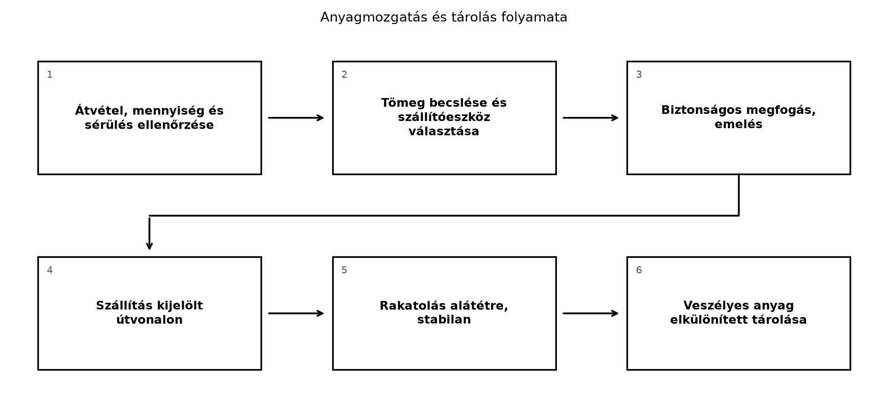
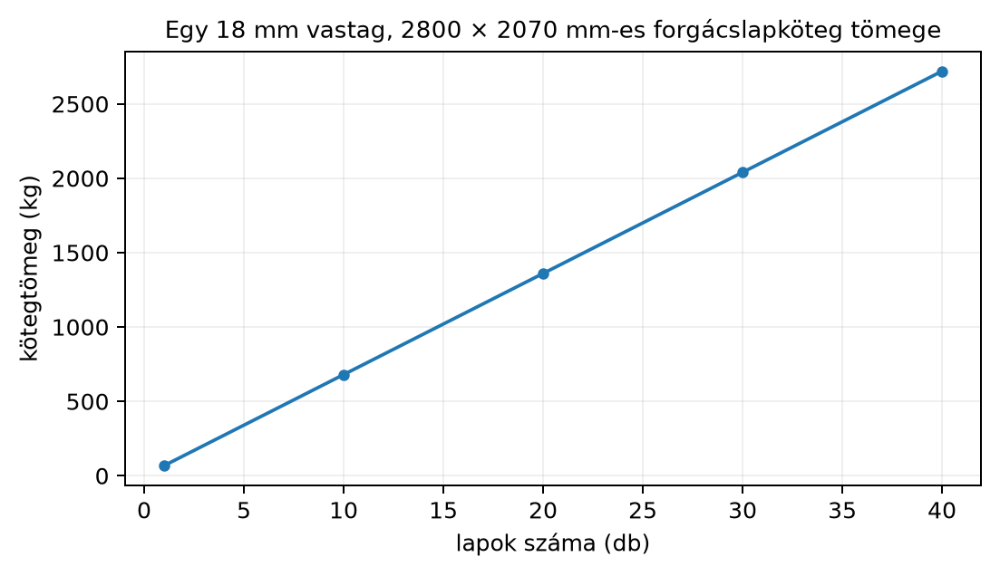

A teherautó megáll a műhely udvarán. A rakodólapon 40 darab 18 mm vastag forgácslap fekszik, a szállítólevelet aláírtad, de senki nem mondta meg, hogyan emeljétek le biztonságosan. Az első tábla megbillen, a szélével az egyik tanuló lábszárához csapódik, a háta megfeszül, amikor megpróbálja egyedül tartani. Ez a fejezet éppen ezt a helyzetet előzi meg: megtanítja, hogyan mozgass, rakatolj és tárolj faanyagot, lapanyagot, fűrészárut és veszélyes anyagokat úgy, hogy a rakat stabil legyen, a hátad védett maradjon, és a műhelyben minden áttekinthető, biztonságos rendben álljon.
Definíció. Az anyagmozgatás minden olyan tevékenység, amellyel nyersanyagot, félkész- vagy készterméket emelünk, viszünk, húzunk, tolunk, átadunk, rakodunk vagy elhelyezünk. A faiparban ide tartozik a fűrészáru lerakodása, a lapkötegek mozgatása, a kész bútorok szállítása és a hulladék eltávolítása is.
Definíció. A rakatolás az anyagok vagy egységrakományok olyan szabályos, állékony elhelyezése, amelynél a rakat sem megmunkálás, sem tárolás közben nem dőlhet meg, nem csúszhat szét, és a szükséges darab kivehető anélkül, hogy a többi anyagot veszélyeztetnénk.
Definíció. A raktározás az anyagok, alkatrészek és késztermékek szakszerű, nyilvántartott, az elérhetőséget és a minőségmegőrzést szolgáló tárolása. A raktározás nemcsak elhelyezés: magában foglalja az azonosítást, a mennyiség- és minőségellenőrzést, az anyagvédelmet, a tűzvédelmet és a hulladékkezelést is.
Definíció. Kézi anyagmozgatásnak nevezzük, amikor a terhet emberi erővel emeljük, visszük, toljuk vagy húzzuk. Gépi anyagmozgatás, ha a műveletet targonca, emelőasztal, daru, futódaru, szállítókocsi vagy más gép végzi.
A nagy táblás lapanyag (forgácslap, MDF, rétegelt lemez), a fűrészáru és a nehéz gépalkatrészek mozgatásánál mindig két kérdéssel kezdj:
A folyamatot ez a térkép foglalja össze:

A kézi anyagmozgatás nem „csak erő”, hanem egy egész testet terhelő munkaforma. A leggyakoribb baleset nem a leeső teher, hanem a rossz testtartásból eredő hát- és deréksérülés. A hátgerinc porckorongjai a hajlított derékkal végzett emelésnél egyenlőtlen nyomást kapnak, és rántással egybekötve könnyen sérülhetnek.
Szabály. Tilos hátból, nyújtott térddel, előrehajolva emelni. Emelés előtt mindig a tárgy mellé kell lépni, a lábat stabilan, vállszélességben kell elhelyezni, és a terhet a testhez közel kell tartani.
Szabály. A terhet soha ne rántsd fel, mert a hirtelen induló erő a gerincet és a vállat is károsítja. Először feszítsd meg a has- és hátizmot, majd egyenletesen, a láb erejével emelj. Fordulni ne derékből, hanem a lábfejekkel, kis lépésekkel fordulj.
Szabvány. A kézi tehermozgatás ergonómiai követelményeire európai szabvány vonatkozik (MSZ EN 1005 sorozat – ellenőrizendő: a pontos rész és a hatályos szám). A munkáltató feladata a kézi tehermozgatás kockázatértékelése, a munkavállaló feladata az oktatásban kapott emelési technika betartása és a túl nehéz teher jelzése.
Megjegyzés. A megengedett teher tömege függ a nemtől, életkortól, a mozgatás gyakoriságától, a testhelyzettől és az útvonaltól. Tájékoztató irányérték kedvező testhelyzetben, alkalmi emelésnél: felnőtt férfi kb. 25 kg, felnőtt nő kb. 15 kg; kedvezőtlen testhelyzet, gyakori emelés vagy fiatalkorú esetén ennél kevesebb (lásd A munkavégzés személyi feltételei, egyéni védőeszközök, ergonómia). A faipari gyakorlatban sok anyag ennél nehezebb, ezért a gépi segítség, a páros emelés vagy a kisebb kötegbe osztás a jó megoldás. A pontos határértéket a hatályos munkahelyi előírás adja (ellenőrizendő: a kézi tehermozgatás rendelete). A tanuló soha ne emeljen fel bizonytalan tömeget egyedül.
Eljárás. A biztonságos kézi emelés lépései faipari anyagokhoz:
A szaggatott alak a tilos emelést mutatja: nyújtott térd, görbe hát, a teher a testtől távol. Az alsó sor a helyes emelés négy fázisa: teher mellé állás vállszélességű terpeszben, térdhajlítás egyenes háttal (vastag vonal), a teher testhez húzása, felállás a lábak kinyújtásával. Jobbra fent két ember lapfogóval, élére állítva visz egy 2800 × 2070 × 18 mm-es forgácslapot (650 kg/m³ sűrűséggel kb. 68 kg). Az interaktív változat a nyolc lépést egyenként mutatja, a fontos testrészt kiemelve.
A forgácslap-, MDF- és rétegelt lemezek nagy méretűek, nehezek és éles sarkúak. Egy 2800 × 2070 mm-es, 18 mm vastag forgácslap tömege általában 60–70 kg között van (tájékoztató adat, a gyártói sűrűségtől függ). Az ilyen lapot nem szabad egyedül, a sarkánál megfogva vinni, mert kicsúszik a kézből, a sarok sérülést okoz, és a lap elhajlik.
Definíció. A lapfogó olyan kétoldali megfogó eszköz, amely a lap élére szorítva biztos kézi fogást ad anélkül, hogy az ujjainkat a lap alá kellene helyezni. A lapfogót párban használjuk: egyik munkás a lap egyik oldalán, a másik a másikon fogja.
Szabály. Nagy táblás lapanyagot kézzel párban mozgass, lapfogóval, kesztyűben. A lapot függőleges vagy enyhén döntött helyzetben tartsd, és ne állj a dőlés irányába. A felső élét mindig a lap síkjából kifelé, a testtől távolabb döntve irányítsd.
A lapanyag mozgatására gyakran lapkocsit vagy A-alakú tárolókocsit használnak. A lapkocsi alacsony, kerekes emelvény, amelyre a köteget csúsztatva gurítható. Az A-alakú kocsi megdöntött háttámlával tartja a lapokat, így azok nem csúsznak le. A kocsit soha ne terheld a megengedett teherbírás fölé, és ne tolj rosszul látott útvonalon.
Tilos. Tilos a lapot puszta falnak támasztani, mert a sima anyag megcsúszik, és a leeső lap súlyos sérülést okoz. Ha mégis ideiglenesen kell támasztani, gumiszőnyeget, éket és oldalsó támaszt kell használni, a lap dőlésszöge pedig kevés legyen.
Megjegyzés. A lapanyag megfogásakor a kesztyű véd a szálkától és a vágott éltől. A forgatáshoz soha ne tartsd az ujjaidat a lap élén úgy, hogy a másik munkás nem látja: megállapodás nélkül ne mozdulj, és „ereszd le”, „emeled”, „tartom” szóbeli jelzéseket adj.
A fűrészáru hosszú, nehéz és sokszor szálkás. Kézi szállításnál a hosszú deszkát vállra lehet venni, de az üres végével másoknak sérülést okozhatunk. Kis műhelyben a rövid darabot egyedül, a hosszú (kb. 2 m fölötti) deszkát párban, mindkét végén fogva szállítsd; egyedül csak a súlypontjánál, az elülső vég figyelésével, szabad útvonalon.
Szabály. Fűrészárut úgy rakatolj, hogy a rakat alja alátétfán, a sorok között lehetőleg azonos vastagságú léceken feküdjön, és a rakat ne legyen magasabb, mint amekkorát a csomagolás, a raklap és a támaszték megtart. A sorok közé azonos vastagságú hézagléceket tégy, egyenletes osztással, pontosan egymás fölött és az alátétfák fölött (ellenőrizendő: osztás és lécvastagság a szárítási előírás szerint). A deszkák a soron belül azonos irányban, egymás mellett feküdjenek.
Szabály. A rakat tetején ne tárolj kiálló darabokat, mert a lelógó végekbe beleakadhat a targonca, a kocsi vagy a munkás ruhája. A rakat tetejét fedd le fóliával vagy ponyvával, ha nedvesség érheti.
Szabály. A rakatot mindig úgy kell kialakítani, hogy a szükséges darabot a rakat megbontása nélkül lehessen kivenni. Ha középről kell kihúzni, akkor az egész rakatot előbb le kell bontani a szükséges mértékig, vagy megfelelő emelőeszközt kell használni.
Gépbiztonság. Targoncát, darut, futódarut és emelőállványt csak érvényes jogosultsággal rendelkező, betanított személy kezelhet. A tanuló ezeket önállóan nem vezeti. A kezelő a gép indítása előtt köteles ellenőrizni a fékeket, a kürtöt, a villákat, a teherbírást, a rakomány rögzítését és a munkaterületet. Tilos embert emelni a villára, a raklapra vagy a darura.
Tilos. Tilos a targoncát megrakott villával, megemelt teherrel úgy mozgatni, hogy a rakomány eltakarja a kilátást; ilyenkor hátramenetben, kísérővel vagy jobb láthatóságot adó helyzetben kell haladni. Tilos a megengedett teherbírás túllépése. Tilos a daru alá állni, és tilos a felfüggesztett terhet kézzel irányítani.
Megjegyzés. A teherbírás a gép által biztonságosan megemelhető legnagyobb tömeg, és nem a raktárban most éppen felemelhető „érzés”. Minden emelő- és anyagmozgató gép mellett ellenőrizni kell a gyártói adattáblát és a gépkönyvben megadott terhelési értéket (ellenőrizendő: gépkönyvi adat).
A faipari műhelyben többféle anyagot kell elkülönítetten tárolni:
Raktártípusok a faiparban: nyitott szín (fedett, de szellős fűrészáru-tároló), zárt anyagraktár (lapanyag, furnér, vasalat), vegyianyag-raktár (tűzveszélyes folyadékok), készáru-raktár (összeszerelt bútorok, beépített elemek csomagolva) és hulladéktároló. Az egyes raktártípusok eltérő hőmérséklet-, szellőzés- és tűzvédelmi követelményt igényelnek.
A lapanyag kétféleképpen tárolható jól: vízszintes kötegben, sík raklapon vagy sűrűn (kb. 400–600 mm-enként, ellenőrizendő) alátámasztva, a padlótól elválasztva; vagy A-alakú állványon kis dőlésszöggel, az alsó él teljes hosszon alátámasztva, hevederrel biztosítva. A ritkán alátámasztott köteg középen behajlik és maradandóan deformálódik; a puszta falnak döntött lap ívesen hajlik, megcsúszhat és felborulhat, ezért soha ne állj a dőlés irányába.
Szabály. A raktárban a közlekedési utakat szabadon kell hagyni, a rakatok ne lógjanak az útra, a polcokat rögzíteni kell a borulás ellen, a raklapokat pedig a teherbírásnak megfelelően kell alátámasztani. A raktár rendjét naponta ellenőrizni kell.
A faipari műhelyben a veszélyes anyagok közé tartoznak a lakkok, oldószerek, ragasztók, pácolószerek, hígítók és az olajos, gyantás törlőrongyok. Ezek tűzveszélyesek, egészségkárosítóak vagy környezetre veszélyesek lehetnek, ezért tárolásuk szigorúbb.
Szabvány. A veszélyes anyagok tárolására a CLP-rendelet szerinti osztályozás, a biztonsági adatlap és a tűzvédelmi előírások az irányadók (ellenőrizendő: CLP-rendelet hatályos száma, OTSZ). A raktárban a tűzveszélyes folyadékokat lehetőleg zárható, szellőző tűzvédő szekrényben vagy elkülönített, robbanásbiztos helyiségben kell tartani.
Szabály. A vegyi anyagokat soha ne tárold élelmiszerrel együtt, ne öntsd át jelöletlen edénybe, és ne keverj össze különböző maradékokat. A tárolóedényeken mindig legyen magyar nyelvű, olvasható címke, és a biztonsági adatlapnak elérhetőnek kell lennie. A felfolyás vagy kifolyás felfogására tálcát, nem éghető alátétet kell alkalmazni.
Tilos. Tilos a lakkot, oldószert fűtőtest, kazán, elektromos kapcsoló vagy szikraforrás közelében tárolni. Tilos az olajos rongyot összegyűrve, nyitott dobozban hagyni, mert a száradó olaj melegedhet és öngyulladást okozhat. Az olajos rongyot fedeles, fémből készült, öngyulladás ellen jelölt tartályban kell gyűjteni.
Megjegyzés. A veszélyes anyagok tárolásánál mindig a termék biztonsági adatlapja és a műszaki adatlap a mérvadó; a könyvben leírt megoldások általános minták, nem helyettesítik a konkrét termékre vonatkozó előírásokat (ellenőrizendő: gyártói adatlap).
Az anyagmozgatás előtt a teher tömegét a sűrűségből és a térfogatból számíthatjuk. Ez a faipari kalkuláció egyik alapegyenlete.
Összefüggés. A tömeg egyenlő a sűrűség és a térfogat szorzatával:
ahol: - a tömeg (kg), - a sűrűség (kg/m³), - a térfogat (m³).
Téglatest alakú anyagnál a térfogat:
ahol a hossz, a szélesség, a vastagság (m-ben).
Továbbvitt eredmény. Ezt a tömegszámítást használjuk a későbbi anyagszükséglet- és kalkulációs fejezetekben, amikor a megrendelt m³ fűrészárut, a lapanyag-mennyiséget vagy a szállítási költséget kell becsülni (lásd az anyagszükséglet-számítás és árkalkuláció részeit).
Számítás. Hány kilogramm egy 1,2 m × 0,8 m × 1,0 m méretű, légszáraz fenyő fűrészáru rakat, ha a sűrűség 500 kg/m³?
Adott: - - - -
Keresett: .
A térfogat:
A tömeg:
Ellenőrzés: 1 m³ fenyő körülbelül fél tonna, itt valamivel kevesebb mint 1 m³, ezért 480 kg reális. Megjegyzés: a fűrészáru rakatban mindig vannak légrések, ezért a rakat méreteiből számított térfogat nem egyenlő a tömör fa térfogatával. A példa egy rendezett, tömörnek tekintett kötegre vonatkozik; tényleges szállítmánynál a rakat tömörfa-tartalmát a rakatjegyzék vagy a mérlegelés alapján kell megállapítani.
Számítás. Mennyi egy 40 lapból álló forgácslapköteg tömege, ha a lapok mérete 2800 × 2070 mm, vastagsága 18 mm, sűrűsége 650 kg/m³?
Először egy lap térfogatát számítjuk:
Egy lap tömege:
A köteg tömege:
Ellenőrzés: 1 m³ forgácslap tömege 650 kg, 40 lap térfogata , ezért a tömeg , tehát a számítás összhangban van. A 2,7 tonnás köteget csak gépi eszközzel (villás targonca, emelőkocsi – jogosult kezelővel) szabad egyben mozgatni. Ha nincs gépi eszköz, a köteget lapról lapra kell bontani: egy lap ≈ 68 kg, ezt két ember lapfogóval viszi.
A köteg tömegének növekedését szemlélteti a következő grafikon:

A grafikonról is leolvasható: a tömeg a lapok számával egyenes arányban nő. Ezért a lapköteget soha ne becsüld „ránézésre”: a számításból és a szállítójegyzékből derül ki a valós teher.
Cél. Beérkező lapanyag sérülésmentes, biztonságos leemelése és raktári elhelyezése.
Anyagok. Forgácslap, MDF, rétegelt lemez vagy bevont lapköteg; jelölt rakodólap, alátétfák, heveder vagy fólia, csúszásgátló.
Szerszámok, eszközök. Kézi lapfogó, lapkocsi vagy A-alakú tároló, gurtni/heveder, kesztyű, orrmerevítős lábbeli, védősisak, ha daruzás is történik.
Biztonsági előírások. Gépi emelést csak jogosultsággal rendelkező személy végezhet. Kézi mozgatásnál párban dolgozz, lapfogóval, kesztyűben. A dőlő köteg alá ne állj. Ellenőrizd a teherbírást és a rakat stabilitását.
Lépések:
Az anyagmozgatás és raktározás minőségét is ellenőrizni kell, mert a hiba itt anyagromlást és balesetet okoz.
Ha eltérést tapasztalsz, a rakatot megbontás nélkül ne javítsd egyedül. Hívd az oktatót, a raktárost vagy a targoncakezelőt.
Hiba. A munkás a lapot a falnak támasztja, és a lap
megcsúszik.
Ok. A lapanyag hátoldala sima, a padló nem
gumiszőnyeges, nincs ék vagy támasz.
Helyes gyakorlat. Soha ne falnak támaszd; A-alakú
tárolót vagy vízszintes alátétet használj, oldalsó támaszokkal.
Hiba. A munkás derékból, hajlított gerinccel emeli
fel a fűrészárut, és hátsérülést szenved.
Ok. Nem hajlította a térdét, a terhet nem vitte
testközelbe, egyedül emelt.
Helyes gyakorlat. Térdből emelj, egyenletesen, párban
vagy eszközzel, és ne rántsd a terhet.
Hiba. A rakat túl magas, a felső deszkák lelógnak,
és elakad a kocsi.
Ok. Nem vették figyelembe a rakatmagasságot és a
kihúzást.
Helyes gyakorlat. A rakatot megengedett magasságra,
azonos szélességű, kiálló rész nélküli sorokkal képezd, és a
közlekedőutat szabadon hagyd.
Hiba. Az olajos rongyot nyitott műanyag vödörben
hagyják a gyalupadon.
Ok. Nem ismerik az öngyulladás veszélyét.
Helyes gyakorlat. Az olajos rongyot azonnal fedeles,
fém, öngyulladás ellen jelzett tartályba kell tenni, és naponta
elszállítani.
Gondoljunk végig egy gyakori esetet, amelyet sok műhelyben tapasztalnak. Egy kis asztalosműhelybe 30 darab 18 mm-es MDF lap érkezik. A tanuló segít a lerakodásnál. A raktáros azt mondja: „csak támaszd oda a falhoz, majd betesszük”. A tanuló a lapot a falnak támasztja, de a sima, poros padlón a lap alja kicsúszik, a lap eldől. A tanuló hátraugrik, a lap a padlóra csapódik, a sarka lepattan, az él sérül. Szerencsére senki nem sérül meg, de a lap használhatatlan. A tanulság: a falnak támasztás tilos; a beérkező lapot azonnal a tárolóállványra kell tenni, és addig is hevederrel, ékkel, segítővel kell rögzíteni. Ugyanebben a műhelyben később a tanuló a nehéz lapot derékból emelte fel, és a nap végén deréktáji fájdalomra panaszkodott. A műhelyvezető az emeléstechnikai oktatást megismételtette, és a nehéz lapok mozgatásához lapfogót, lapkocsit és páros emelést írt elő. A baleset nem a gépen, hanem az anyagmozgatásnál történt – ezért ezt a területet ugyanolyan komolyan kell venni, mint a körfűrész kezelését.
A válaszokat a ### Megoldások elején, „Önellenőrzés –
válaszok” alcím alatt találod.
1. feladat (A). Fogalmazd meg röviden, mi a különbség az anyagmozgatás, a rakatolás és a raktározás között.
2. feladat (A). Számítsd ki egy 2,5 m × 0,8 m × 0,6 m méretű, légszáraz fenyő fűrészáru rakat tömegét, ha a sűrűség 500 kg/m³. Ellenőrizd a nagyságrendet.
3. feladat (B). Egy lapraktárba 25 db 2800 × 2070 × 16 mm-es forgácslap érkezik. A gyártói adatlap szerint a sűrűség 640 kg/m³. Számítsd ki egy lap tömegét és a teljes köteg tömegét. Hány m³ a teljes köteg?
4. feladat (B). Hasonlítsd össze egy 3 m hosszú, 100 mm × 100 mm keresztmetszetű gerenda tömegét fenyőből (500 kg/m³) és tölgyből (700 kg/m³). Mennyivel nehezebb a tölgy gerenda?
5. feladat (C). Egy munkatárs egyedül, derékból szeretne felemelni egy 70 kg-os forgácslapot. Végezd el a hibaelemzést: mi a veszély, mi a helyes technológia, milyen eszközökkel lehet a lapot biztonságosan mozgatni?
6. feladat (D). Tervezz egy egyszerű tárolási rendet a lapanyag-, fűrészáru- és vegyianyag-raktár számára. Add meg a tárolási módot, a rögzítést, a jelölést, a tűz- és balesetvédelmi szempontokat. Készíts belőle ellenőrzőlista-részletet.
Anyagmozgatás: az anyag emelése, szállítása, tolása, húzása, rakodása. Rakatolás: az anyag állékony, szabályos egymásra helyezése. Raktározás: az anyagok, termékek szakszerű, nyilvántartott, minőségmegőrző tárolása. A három fogalom tehát a műveletet, az elhelyezést és a tárolási rendszert jelenti.
Adott: , , , .
Keresett: .
Ellenőrzés: 1,2 m³ fenyő nagyjából fele tonna + 20 %, tehát 600 kg reális. Mivel a fűrészáru rakatban légrések lehetnek, a tényleges tömörfa-tömeg ennél kisebb is lehet – a példában a teljes rakatméretet vettük tömörnek.
Adott: , , , , darabszám: 25 db.
Egy lap térfogata:
Egy lap tömege:
A teljes köteg térfogata:
A teljes köteg tömege:
Ellenőrzés: 1 m³ forgácslap tömege 640 kg, ezért 2,32 m³ tömege , ami jó.
A gerenda keresztmetszete 100 mm × 100 mm, azaz . Hossza , ezért térfogata:
Fenyőnél:
Tölgynél:
A különbség:
Ellenőrzés: a tölgy sűrűsége 40 %-kal nagyobb, ezért 15 kg + 40 % = 21 kg; a különbség 6 kg. A tölgy gerenda kézi mozgatása ugyanakkora méretnél nehezebb, ezért a szállítási és rakodási tömeg számításánál mindig a pontos anyag sűrűségével számolj.
Tünet: egyedül, derékból akar felemelni egy 70 kg-os forgácslapot.
Lehetséges veszélyek: hátsérülés, deréksérülés, a lap kicsúszik, ráesik a lábra, a sarok sérülést okoz, a rakat elbillen.
Vizsgálat: a teher tömege 70 kg, ami meghaladja az egyfős, különösen a rossz testtartású emelés ésszerű határát. A lap síkja merev, de nagy mérete miatt nehezen tartható, és a súlypont nem a testhez közel helyezhető.
Helyes megoldás: két ember, lapfogóval, kesztyűben, térdből, a lapot függőlegesen vagy enyhén megdöntve tartva. Ha a lapot rakatból veszik ki, előbb lapkocsival vagy A-alakú állvánnyal meg kell támasztani, esetleg gurtnival rögzíteni. Nagy köteg esetén gépi anyagmozgatás szükséges.
Megelőzés: az ilyen lapok mozgatását eleve párban tervezzék, a műhelyben legyen lapfogó és lapkocsi, és az oktatás minden évben ismételje meg az emelési technikát.
Lapanyag-raktár: vízszintes alátétfán vagy megdöntött, hevederrel biztosított A-állványon; anyagjelölés; ne érje nedvesség; a köteg ne lógjon az útra.
Fűrészáru-raktár: száraz, szellős; alátétfák; fajtánként, méretenként rendezve; hézaglécek egymás fölött; rakatmagasság korlátozott; ponyvával vagy fóliával takarható.
Vegyianyag-raktár: elkülönített, szellőztetett; tűzveszélyes anyagok tűzvédő szekrényben; kifolyásfelfogó tálca; jelölés és biztonsági adatlap; hő- és szikraforrástól távol.
Ellenőrzőlista-részlet: - Minden rakat stabil? - A közlekedőutak szabadok? - A lapköteg rögzítve van? - A vegyi anyagok címkéje olvasható? - Az olajos rongy fedeles fémtartályban van? - A biztonsági adatlapok elérhetők?
Az anyagmozgatás, rakatolás és raktározás biztonsága a faiparban ugyanolyan fontos, mint a gépek védőberendezései. A kézi emelésnél a hátat védeni kell: a teher legyen a testhez közel, az emelést térdből, egyenes gerinccel, egyenletes erővel végezzük, és ne a derekunkkal forduljunk. A nagy forgácslapot, MDF-et párban, lapfogóval, kesztyűben mozgassuk, ne támaszuk puszta falnak, mert megcsúszik. A fűrészárut alátétfára, stabil sorokban rakatoljuk, a rakat ne lógjon a közlekedőútra. Targoncát, darut csak jogosultsággal rendelkező, betanított személy kezelhet, a teherbírást és a rakomány rögzítését mindig ellenőrizni kell. A veszélyes anyagokat elkülönítve, tűzvédő szekrényben, szellőztetve, címkézve kell tárolni, az olajos rongyot pedig fedeles, fém gyűjtőben. A teher tömegét a sűrűségből számíthatjuk: , ahol a térfogat méterben vett méretekből . Ez az összefüggés a későbbi anyagszükséglet- és szállítási kalkulációk alapja.
A fejezet általános forrásai a munkavédelmi törvény (1993. évi XCIII. törvény, hatályos szöveg – ellenőrizendő), a kézi tehermozgatásra vonatkozó munkahelyi előírások (ellenőrizendő: rendelet száma), az MSZ EN 1005 sorozat ergonómiai szabványai (ellenőrizendő: a hatályos rész), a CLP-rendelet és az Országos Tűzvédelmi Szabályzat (OTSZ – ellenőrizendő: hatályos szám). A sűrűség- és tömegértékek tájékoztató minták, a konkrét anyaghoz gyártói adatlap szükséges. A targoncakezelői jogosultság, a teherbírás, a rakatmagasság és a vegyianyag-tárolási mennyiségek a helyi kockázatértékelés, a gépkönyv és a hatályos előírások szerint ellenőrizendők.